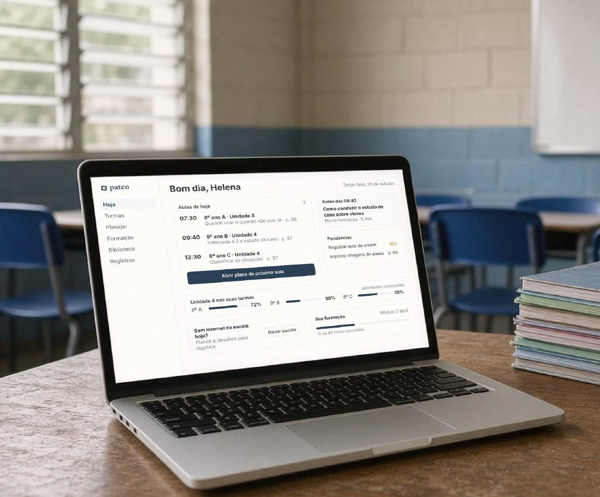

Professor
Prioridade inicial
Formação em IA que acontece enquanto ele prepara a aula. Guia, microvideoaulas, plano minuto a minuto, apoio em sala e registro do que aconteceu.
PATEO é um programa de letramento em IA para escolas públicas. Começamos por quem ensina: formação que acontece dentro da aula que o professor vai dar, material impresso e apoio. Sem internet, sem aplicativo, sem celular de aluno.

Seis aulas de 50 minutos, para 8º e 9º ano. O professor media. O impresso basta.
Os alunos já usam inteligência artificial no dia a dia. Organizar o que se faz com isso em sala cabe, na prática, ao professor.
Ponto de partida do desenho. Não é um levantamento da rede.

A construção começa por quem ensina. O aluno continua no produto. Não é corte de escopo.
Prioridade inicial
Formação em IA que acontece enquanto ele prepara a aula. Guia, microvideoaulas, plano minuto a minuto, apoio em sala e registro do que aconteceu.
Parte do produto, implementação em seguida
Livro, atividades em grupo, letramento em IA e pensamento crítico, com o professor mediando. O material do aluno já começou a ser desenvolvido. A entrada no piloto ainda não foi decidida.
No desenho, quem contrata é a Secretaria Municipal de Educação: formação e material para a rede, e acompanhamento da implementação. Nenhuma rede assinou. Nada foi vendido. Há conversas iniciais com parceiros de distribuição. Nada assinado.
Um texto-fonte, dois materiais. O professor prepara pelo guia. O aluno trabalha pelo livro. É a mesma unidade.


O guia se constrói primeiro. O livro nasce do mesmo texto-fonte. Conferência pendente de título: nesta prévia, o tema de trabalho da primeira unidade é “Como saber se uma IA está dizendo a verdade?”. A capa ilustrativa traz outra frase, e a página desenhada do livro se apresenta como outra unidade, no capítulo “Verificar antes de confiar”. As linhas ainda não fecharam.
Três perguntas para qualquer resposta de IA, no 8º e no 9º ano. De onde veio a informação? O que diz uma fonte que não seja a própria IA? Está correta, incorreta, ou não dá para confirmar?

Professor e alunos falariam da mesma página no papel, no celular ou no tablet. A fotografia é ilustrativa, com tela do projeto. A unidade do piloto não depende dessa tela.
Telas de um protótipo navegável, com dados fictícios. A plataforma está prevista para a fase 2. Sem projetor, o que a aula precisa está impresso.
1
Cinco minutos de microformação antes da aula. O conceito é explicado ao professor, não ao aluno.

2
O plano com a formação dentro: objetivos, habilidades, roteiro em blocos de tempo. Em minutos, não em horas de preparo.

3
A atividade no projetor e as notas do professor fora dele. Sem projetor, está no impresso.

4
Cerca de trinta segundos de registro. Resultados por grupo, nunca por aluno. Uma sugestão para a próxima aula.


Hoje é um protótipo com dados fictícios, feito para ouvir professores antes de construir. Sem dado individual de aluno. Sem ranking.



Estágio: pré-piloto. Nenhum contrato com redes. Material ainda não validado em sala. Próximo passo: piloto com 3 a 6 professores no 1º semestre de 2027, sem custo para a rede, com termo e relatório.
Documento mestre do produto. Levantamento de mercado e de regulação. Método pedagógico. Identidade visual. Páginas do guia e do livro desenhadas.
A plataforma, clicável no navegador, com dados inventados. Nenhuma função construída de verdade.
Conteúdo completo escrito e revisado. Vídeos gravados. Responsável pedagógico. Parceria formalizada. Primeira rede.
Nome provisório. Nenhuma rede assinou. Nada foi vendido. A condição “sem custo para a rede” é a do piloto desenhado, não uma tabela de preço.
Não há e-mail nem telefone nesta página. A conversa é com quem recebeu a prévia.
O detalhe, para quem for decidir com calma. Onde a frase ainda depende de conferência humana, está escrito.
Os alunos já usam ferramentas de IA e nem sempre sabem checar quando a resposta erra. Em 2026 o Conselho Nacional de Educação aprovou diretrizes para IA na educação. No projeto de resolução, nos Anos Finais a IA generativa fica condicionada à mediação de um profissional da educação. A homologação ainda não foi localizada nesta revisão. A tarefa de sala, de todo modo, cai no professor. O desenho parte de três condições: formação longe da aula que ele vai dar, pouco material pronto para usar, e escola que muitas vezes não tem internet. Não é um censo da rede.
Duas experiências no mesmo produto. Para o professor: formação prática em IA, guia, microvideoaulas, planos minuto a minuto e acompanhamento. Para o aluno: livro, atividades e letramento em IA com pensamento crítico, sempre com o professor. Uma unidade de seis aulas sobre IA para 8º e 9º ano, que funciona sem internet, sem aplicativo e sem celular de aluno.
Um documento mestre do produto, com requisitos e decisões registrados. Um levantamento de mercado e de regulação. O método pedagógico. A identidade visual, as páginas do guia e do livro, e um protótipo navegável da plataforma. Conversas iniciais com parceiros de distribuição. Nada assinado.
Usam o professor e o aluno. No desenho, quem contrata é a Secretaria Municipal de Educação, para a rede, e acompanha o programa. Formação com material impresso entra por um caminho de compra mais simples que software, e o impresso não guarda dado de criança. Nenhuma secretaria contratou.
É o espaço de trabalho do professor e o painel da Secretaria. O aluno participa pela sala e pelo impresso. Existe hoje como protótipo navegável, com dados inventados. Entra na fase 2, depois do piloto, quando os professores tiverem dito o que precisam.
Registrar no documento mestre a ordem de desenvolvimento. Seguir as conversas de distribuição, ainda sem nada assinado. Trazer um responsável pedagógico que assine o conteúdo. Fechar a primeira rede para o piloto.
Quando e como o livro do aluno entra. Faz parte da visão. Falta definir se entra no piloto ou na rodada seguinte, e em que formato: capítulo impresso por aluno, folhas de atividade, ou os dois.
Registrar a sequência no documento mestre. Dois públicos, ordem de desenvolvimento começando pelo professor. Reler os requisitos nessa ordem.
O formato da formação docente. Carga horária, certificado, se conta como formação continuada para a rede. Nada definido. O protótipo mostra uma trilha só como ilustração.
O que o piloto mede. Primeiro, se o professor consegue preparar e dar a aula com o material. Depois, o que a turma produziu no desafio, por grupo. Pesos a definir com o responsável pedagógico.
Quais telas entram na fase 2. O protótipo tem mais telas do que o piloto precisa. Decisão só depois do piloto.
Pesquisa de mercado e regulação, levantamento, documento mestre, método, primeiros desenhos e protótipo navegável.
Identidade visual e esta prévia. Sequência definida: professor primeiro, aluno no mesmo produto.
Documento mestre revisado, conversas de distribuição sem nada assinado, responsável pedagógico, primeira rede para o piloto.
Escrever e revisar o guia, os planos e as atividades. Gravar as microvideoaulas. O livro em paralelo. Imprimir o material do piloto.
Piloto. Relatório. Decisão de escala e de fase 2.